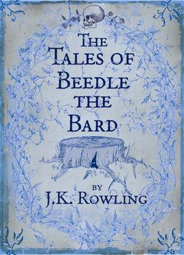
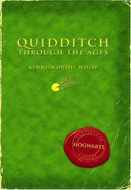

Harry Potter Derivative Works
Fantastic Beasts and Where to Find Them《神奇动物在哪里》

Fantastic Beasts and Where to Find Them (often referred to as simply Fantastic Beasts) is a 2001 guide book written by British author J. K. Rowling (under the pen name of the fictitious author Newt Scamander) about the magical creatures in the Harry Potter universe. It includes several notes inside it supposedly handwritten by Harry, Ron Weasley, and Hermione Granger, detailing their own experiences with some of the beasts described, and including inside jokes relating to the original series.
The Tales of Beedle the Bard《诗翁彼豆故事集》
The Tales of Beedle the Bard first appeared as a fictional book in J. K. Rowling's Harry Potter and the Deathly Hallows (2007), the seventh and final novel of the Harry Potter series. The book is bequeathed to Hermione Granger by Albus Dumbledore, former headmaster of Hogwarts School of Witchcraft and Wizardry. It is described as a popular collection of wizarding children's fairy tales.
Quidditch Through the Ages《神奇的魁地奇球》
Quidditch Through the Ages is a 2001 book written by British author J. K. Rowling using the pseudonym of Kennilworthy Whisp about Quidditch in the Harry Potter universe. It purports to be the Hogwarts library's copy of the non-fiction book of the same name mentioned in several novels of the Harry Potter series.
Content sourced from Wikipedia.